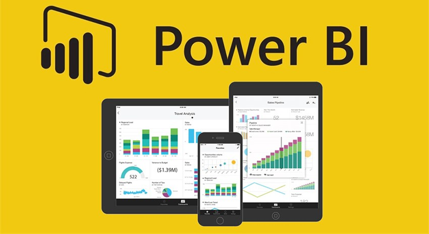

With a strong foundation in tech support, SEO sales and B2B sales. I have built a diverse skill set in sales, marketing, and operational management. Later joining my brother’s company, I oversaw key functions such as marketing, export, and production, developing a keen understanding of business dynamics. Additionally, I launched a diagnostic lab franchise, further strengthening my skills in business management.
I am now focusing on a career in data analysis, leveraging my experience to interpret data and drive strategic decisions. My goal is to combine my business expertise with data-driven insights to deliver impactful solutions that promote growth and innovation.

This SQL file contains a set of queries designed for data exploration. It demonstrates how I extract valuable insights from a dataset, analyze employee information such as employee IDs, names, and salaries, and uncover patterns. The focus is on applying SQL techniques to structure, filter, and summarize data efficiently..

This SQL file showcases my approach to data cleaning using SQL queries. It includes steps to identify and handle missing values, remove duplicates, and standardize data for accurate analysis. The script emphasizes my ability to prepare datasets for further analysis and ensure data quality..

Explore a curated collection of my Tableau beginner projects that showcase my journey into the world of data visualization. As a budding data analyst, I've focused on developing foundational skills in Tableau, and this portfolio reflects my progress and passion for data storytelling..

The provided dashboard offers a comprehensive visualization of bike sales data, highlighting key trends and relationships between various factors. It includes several charts and filters that allow for interactive exploration of the data..

This project demonstrates my foundational skills in Power BI, a popular business intelligence tool. As a beginner, I've created a simple yet informative dashboard using a sample dataset..

I have practiced various beginner-level Python projects and concepts using Jupyter Notebooks, covering topics such as data cleaning, exploratory data analysis, file sorting, web scraping, loops, functions, conditional statements, and data visualization.